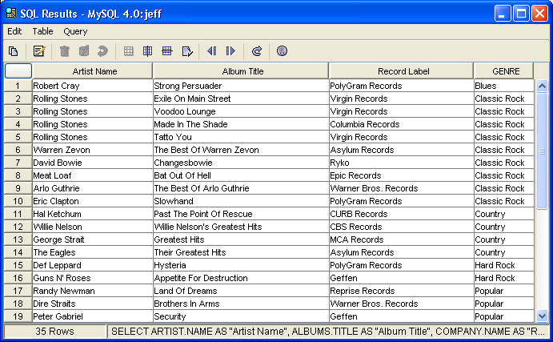
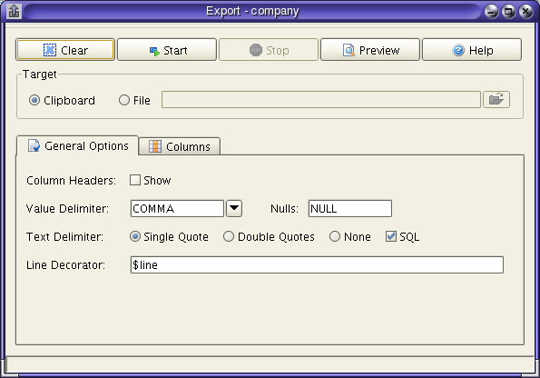

Query Results
The Query Results window displays the result set from a query. In this view you can sort the columns, reorder the columns, split vertically or horizontally, and export the results. If the data is from a single table and that table has a primary key, you can also delete a range of results.

| Copies the selected data to the clipboard using the formatting set in the Copy Special dialog. | |
| Displays this data in a form view. This is useful if the data contains blob types which cannot be viewed in the results view | |
| Deletes the selected row. This option is available only if the query is against a single table and that table has a primary key | |
| Commits any deleted rows. This assumes the database supports transactions. | |
| Rolls back any deleted rows. This assumes the database supports transactions. | |
| Displays the data in the standard view | |
| Splits the view horizontally | |
| Splits the view vertically | |
| Displays the result set metadata for the query | |
| Moves the topmost visible row to the first row in the result set. | |
| Moves the bottommost visible row to the last row in the result set. This option is only available if the ResultSet is scrollable. Some databases such as DB2 do not support scrollable ResultSets in certain circumstances. |
Sorting
You can sort each column by clicking on the column header. You can sort in ascending or descending order. The sort mode is cycled by clicking on the header multiple times.
Note that for large result sets, Abeille does not download everything at once. This is denoted by a + sign after the row count in the status bar. When you see this, it means that Abeille has not reached the last row in the result set and therefore, cannot determine the exact size of the result set. When sorting, you should make sure all data has been retreived by clicking the move last button on the toolbar.
Data from the query results window can be exported to either the clipboard or a file. You can export everything in the result set or a selected subset of the data.

| Clear | Resets the export settings to their default values. |
| Start | Starts the export process. |
| Stop | Stops the export process. This option is available only if you are exporting to a file. In this case, the data is exported in the background. This allows you to stop the process at any time. However, once an export is stopped, it cannot be restarted from the same place. |
| Preview | Previews the exported data. This allows you to inspect how the settings affect the resulting output before running the export. |
Export Settings
| Column Headers | If the show button is selected, the column headers are included in the output. You can also select a delimiter to use between each column header |
| Value Delimiter | Allows you to select a character(s) to be used as a delimiter between each value in the output. |
| Text Delimiter | For those columns that are text, you can define the type of delimiter for the text value. The default is a single quote. You can also select double quotes or no delimiter. If the SQL checkbox is selected, quote characters are duplicated in those text values that have quotes. For example, the string , Sandy's email, would be exported as 'Sandy''s' email. |
| Line Decorator |
You may supply any text that you wish to be prepended or appended to each row that is exported. The actual row is denoted by $line. For example, you could generate SQL insert statements from an export by providing a line decorator such as: insert into mytable (col1, col2, ... ) values ( $line ); |
| Column Options | The Column Options table allows you to change the order of each column in the output. You can also change the format of how each column is exported. If a column is a text type in the result set, the Text check box will be selected in the table. You can manually check or uncheck this box to require the export to include text delimiters on the exported value. The Include checkbox controls whether the selected column is included in the output. Additionally, you can provide a decorator on the column value. This works in exactly the same way as the line decorated. The only difference is that the column values are denoted by $value. |